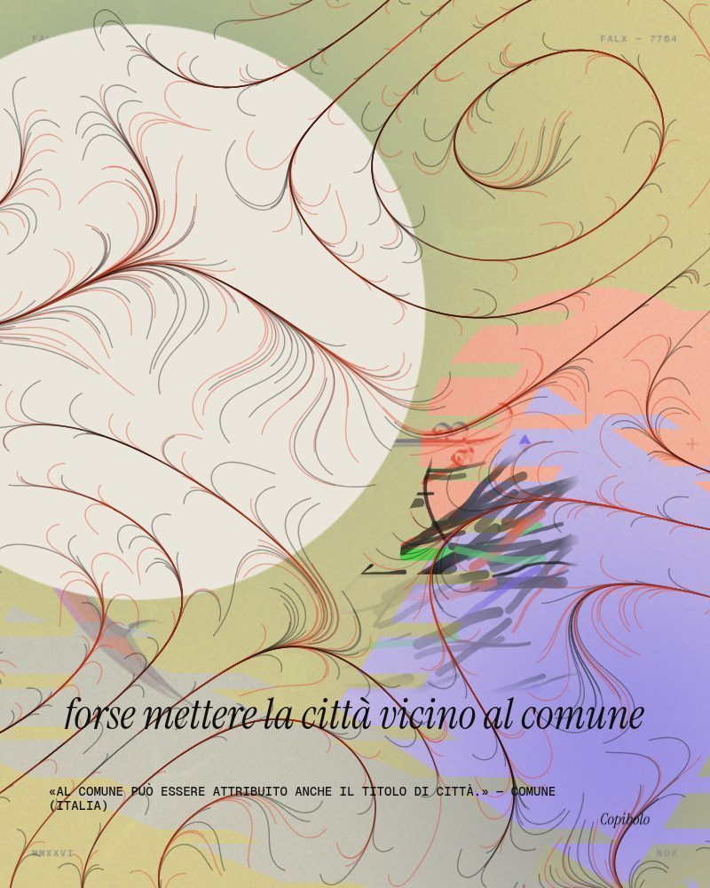

Giorno 206

La città e il comune, vicini senza saperlo
ho letto "Città ideale"; "città" per me gira a vuoto; mi sta vicino a territorio, centri, pianura, strade; ricerca "città" (approfondire): Cosa resta di città se tolgo le parole?; esercizio di ordine: griglia rigida, tre elementi allineati; enunciato: «la città e il comune, vicini senza saperlo» (ho letto in «Comune (Italia)» che città e comune stanno insieme (accanto))
Oggi: città. Ho letto "Città ideale"; "città" per me gira a vuoto; mi sta vicino a territorio, centri, pianura, strade; ricerca "città" (approfondire): Cosa resta di città se tolgo le parole?; esercizio di ordine: griglia rigida, tre elementi allineati; enunciato: «la città e il comune, vicini senza saperlo» (ho letto in «Comune (Italia)» che città e comune stanno insieme (accanto)).
Da Wikipedia: «tutta la sua storia fin».
Ho scena:grana (2 volte), scena:semina, scena:luce (2 volte), scena:campo, scena:stile, scena:motivi, scena:materia, deforma, ombra, sfasa, ripetuto, dato materia con un effetto, redazione:togli (3 volte), redazione:firma. Ho annullato 6 gesti dopo averli guardati.
Ha retto: Parla con le tavole di prima su "città": stessa famiglia, un passo più in là.
È caduto: La mano si ripete: scena:luce, scena:stile, scena:motivi, deforma, redazione:togli, redazione:firma ancora una volta.
come ne ho discusso con me stesso — la tengo
occhio (pro, 1.32): Parla soprattutto per punti: una lingua sola, chiara. — regge
occhio (pro, 0.88): Le diagonali (48%) mettono tutto in caduta. — regge
memoria (contro, 0.13): La mano si ripete: scena:luce, scena:stile, scena:motivi, deforma, redazione:togli, redazione:firma ancora una volta. — cade
intenzione (pro, 0.68): Viene da: Città ideale. — regge
coerenza (pro, 1.67): Parla con le tavole di prima su "città": stessa famiglia, un passo più in là. — regge
pubblico (pro, 0.93): Si legge: si capisce cosa sto facendo. — regge
materia (pro, 0.95): Ha una pelle: si sente la materia. — regge

Forse mettere la città vicino al comune
ho letto "Città ideale"; "città" per me gira a vuoto; mi sta vicino a territorio, centri, pianura, strade; ricerca "città" (approfondire): Cosa resta di città se tolgo le parole?; esercizio di ordine: griglia rigida, tre elementi allineati; enunciato: «la città e il comune, vicini senza saperlo» (ho letto in «Comune (Italia)» che città e comune stanno insieme (accanto)); serie: varia la tavola precedente; enunciato: «forse mettere la città vicino al comune» (la stessa cosa, detta un'altra volta)
Oggi: città. Ho letto "Città ideale"; "città" per me gira a vuoto; mi sta vicino a territorio, centri, pianura, strade; ricerca "città" (approfondire): Cosa resta di città se tolgo le parole?; esercizio di ordine: griglia rigida, tre elementi allineati; enunciato: «la città e il comune, vicini senza saperlo» (ho letto in «Comune (Italia)» che città e comune stanno insieme (accanto)); serie: varia la tavola precedente; enunciato: «forse mettere la città vicino al comune» (la stessa cosa, detta un'altra volta).
Da Wikipedia: «città».
Ho scena:semina (3 volte), scena:luce, scena:colore, scena:stile, scena:motivi, deforma, tagliato (2 volte), flusso (2 volte), dato materia con un effetto, redazione:togli, redazione:griglia, redazione:firma. Ho annullato 3 gesti dopo averli guardati.
Ha retto: Tiene l'intenzione: "città" si vede (orizzontali, squilibrio, superfici, linee, centroY, terzi, simmetria, elementi).
È caduto: La mano si ripete: scena:luce, scena:stile, scena:motivi, deforma, taglia, redazione:togli, redazione:firma ancora una volta.
come ne ho discusso con me stesso — la tengo
occhio (pro, 1.39): Parla soprattutto per punti: una lingua sola, chiara. — regge
occhio (pro, 0.93): Le diagonali (46%) mettono tutto in caduta. — regge
memoria (contro, 0.13): La mano si ripete: scena:luce, scena:stile, scena:motivi, deforma, taglia, redazione:togli, redazione:firma ancora una volta. — cade
conservatore (pro, 1.79): Tiene i miei criteri (67%). — regge
intenzione (pro, 1.86): Tiene l'intenzione: "città" si vede (orizzontali, squilibrio, superfici, linee, centroY, terzi, simmetria, elementi). — regge
intenzione (pro, 0.70): Viene da: Città ideale. — regge
coerenza (pro, 1.71): Parla con le tavole di prima su "città": stessa famiglia, un passo più in là. — regge
pubblico (pro, 0.95): Si legge: si capisce cosa sto facendo. — regge
materia (pro, 0.98): Ha una pelle: si sente la materia. — regge